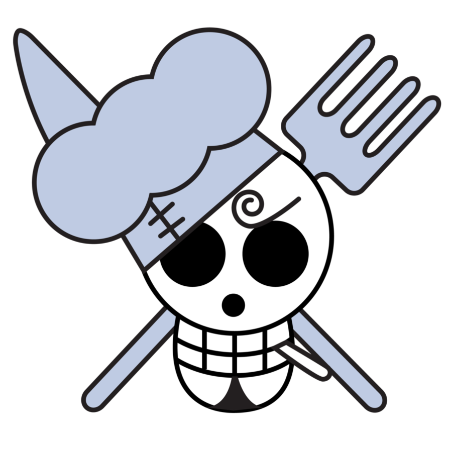

Specials


Chapter 1060
Luffy reveals his Dream to the crew and we get to see their reaction.Sabo continues his call with dragon.He mentions being in Lulucia Kingdom and having seen a person sitting on the empty throne.Imu is seen with a map that has Lulucia kingdom crossed out
Learn More

One Piece: Red
The action takes place on the "Island of Music" Elegia, where the greatest diva in the world, Uta, does her debut live show and makes herself known to the general public. Uta's voice has been called "otherworldly," and the Straw Hats, pirates, Marines, and admirers from all over the world congregate to enjoy it. However, the stunning discovery that Uta is Shanks' daughter sets off the entire scenario .
Learn More